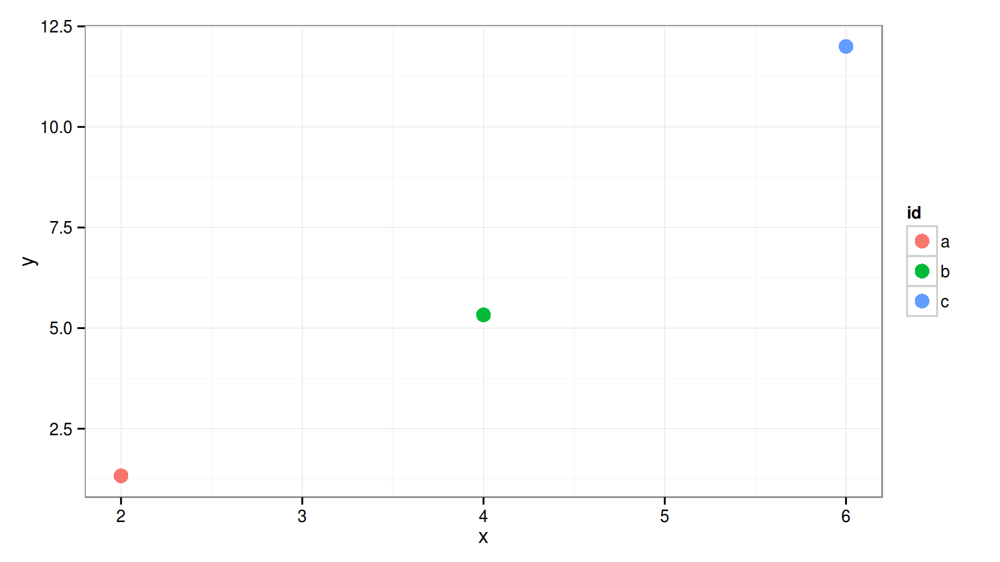

This presentation was a lot harder than I thought it would be!
x to make senseStuff I do in the course of my work (probably not that different from you!):
Believe it or not, I learned Emacs for org-mode. To date, it's the only solution I'm
aware of that allows for all of the following in one place:
\pause
Pretty cool!
I've always been a note taker, as I like to refer to the past… you never know what might be useful in the future! I tried all sorts of programs:
Org-mode is a major mode for the Emacs text editor.
* ok, so what is it? # heading =Org-mode= is a major mode for the Emacs text editor. - it uses markup to allow for structuring # list
bold, italic, underline, footnote \(\footnote[frame]{Footnote goes here}\), superscriptsx and subscriptsy, link
* heading ** subheading - unordered list 1. ordered list *bold*, /italic/, _underline_, footnotes[fn:1], superscripts^x and subscripts_y, [[https://www.google.com][link]] * Footnotes Footnote goes here [fn:1]
[1/2] meta task proj[X] thing 1[ ] thing 2** todo do something ** todo [1/2] meta task :proj: - [X] thing 1 - [ ] thing 2 ** done another thing
Can add further information to notes (logs, deadlines, etc.)
[2016-01-18 Mon]
Did blah blah blah
Can add further information to notes (logs, deadlines, etc.)
** Notes about meeting with Dude [2016-01-18 Mon] Did blah blah blah ** todo do something DEADLINE: <2016-01-21 Thu>
$ refers to column; @ refers to rowcalc has format specifiers built in| id | x | y |
|---|---|---|
| a | 2 | 1.33 |
| b | 4 | 5.33 |
| c | 6 | 12.00 |
#+tblname: dat_1 | *id* | *x* | *y* | |------+-----+-----| | a | 2 | 4 | | b | 4 | 16 | | c | 6 | 36 | #+TBLFM: $3=$2^2/3; %.2f
I had 10 apples and I ate 4. I must
have 6 left.
I had src_R[:session r]{x <- 10; x} apples and I
ate src_R[:session r]{y <- 4; y}. I must have
src_R[:session r]{x - y} left.
#+name: code-ex1 #+header: data = dat_1 #+begin_src R :session r :exports results :results output library(ggplot2) sum(data$y) #+end_src
[1] 18.66
p <- ggplot(data, aes(x = x, y = y, colour = id))
p + geom_point(size = 4) + theme_bw()

#+name: dat1_plot #+header: :var data = dat_1 :file ../../plots/dat1_scatter.png #+header: :width 1600 :height 900 :res 200 #+begin_src R :session r :exports both :results output graphics p <- ggplot(data, aes(x = x, y = y, colour = id)) p + geom_point(size = 4) + theme_bw() #+end_src
#+begin_center #+attr_html: :height 600px #+RESULTS: dat1_plot [[file:../../plots/dat1_scatter.png]] #+end_center
Like a search engine for your files
x)Demo time!
If you find this intriguing but intimidating, start small
Ask for help